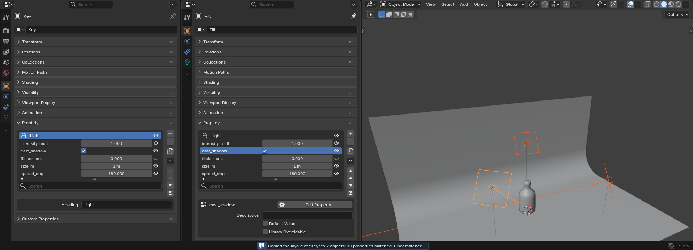

Proptidy quick start
Installing Proptidy, ordering your first properties, and what the animator sees. Back to the Proptidy product page.
Install (Blender 4.2 LTS to 5.3)
- After checkout, download
proptidy-1.0.4.zipfrom the link in Polar's email. Install the zip itself; do not unzip it. - In Blender, open Edit > Preferences > Get Extensions.
- Blender may first say that internet access is required, with Continue Offline and Allow Online Access. Proptidy needs no internet, and Install from Disk works either way, so Continue Offline is fine.
- After Continue Offline, Blender may show a Repository Alert saying the remote data of extensions.blender.org is unavailable. That is Blender's message about its online catalogue; it does not affect Install from Disk.
- Open the drop-down menu (⌄) at the top right, choose Install from Disk... and pick the zip. Proptidy is enabled at once. Its entry in Blender's extension list links back to this page.
- Open the Properties editor on a tab with custom properties, for example the Bone tab of your rig's properties bone in Pose Mode. The Proptidy panel sits directly above Blender's Custom Properties panel, which Blender keeps at the bottom of the tab; drag Proptidy's panel by the dots at the right of its header to the top if you like, and Blender remembers it.
One purchase is one seat: one artist, on all of their own computers. A team buys one seat per artist.
To update, install the newer zip the same way; your orders live in your .blend files and stay as they are. To remove Proptidy, go to Edit > Preferences > Get Extensions, click the drop-down arrow (⌄) next to Proptidy and choose Uninstall (the Add-ons tab lists Proptidy too, but has no Uninstall for extensions): your files keep every property, value, keyframe and driver, and Blender's panel shows them sorted by name again.
Put your properties in order
![The Proptidy panel on the Bone tab of Rain's Properties_IKFK: the heading Arms and legs over ik_arm_left, ik_arm_right, ik_leg_left and ik_leg_right, a spacer, the heading Stretch over ik_stretch_arms (selected), ik_stretch_legs and ik_stretch_spine, then cloudrig_component and the fk_hinge switches; the buttons +, -, Duplicate, the menu, Move to Top, Move Up, Move Down and Move to Bottom beside the list; the filter field under it; below, the settings of ik_stretch_arms: Edit Property, Description 'Stretch the arms when in IK', Default Value 1.000, Min 0.00, Max 1.50, Soft Limits on, Soft Min 0.00, Max 1.00, Step 1.00, Precision 3, Subtype Factor, Library Overridable on](img/list-and-settings.png)
- Click a row's name to select it.
- Move it with the buttons beside the list: Move to Top, Move Up, Move Down, Move to Bottom. Nothing is renamed, so drivers, keyframes and scripts that use the name keep working. Each action prints a one-line report in the status bar.
- Group it: the list's menu (the down arrow) has Add Heading, which puts a heading above the selected row (type its text in the Heading field below the list), and Add Spacer, which puts an empty row above it. Select a heading or spacer and press - to remove it.
- Find it: type in the filter field under the rows. "leg" lists every property with "leg" in its name;
*and?work as wildcards.
- + adds a property at the bottom, Duplicate copies the selected one with its value and settings (not its keyframes) right below it, - removes it.
- Values are edited right in the rows. Long arrays and group properties show Blender's own Edit Value button.
- A property set you have not touched shows Blender's order. From your first action on, Proptidy keeps yours; properties added any other way (Blender's own New button, a script, Rigify) appear at the bottom.
- Menu > Sort by Name returns to Blender's order (headings and spacers go, after a confirmation that counts them). Ctrl+Z brings your order back.
- In Edit Mode the Bone tab shows a note instead of the list: order bone properties in Object Mode or Pose Mode.
- Outside Pose Mode the Bone tab lists the bone's own properties, as Blender's panel does. If you keep your switches on the pose bone, a line above the list says how many there are; switch to Pose Mode to order them.
- The list shows up to 12 rows; drag the dotted grip under the rows to make it taller.
- Values come first: each value keeps the room to show the widest number in the list in full (
0.500, not0.; checked in Properties editors from 300 pixels wide), and the names get the rest. With values like 0.500, a name that Blender's own Custom Properties panel shows whole is whole in the list from Blender's default Properties width up (about 340 pixels at 1920×1080; about 510 at Resolution Scale 1.5). A name that must be shortened loses its middle, not its end:arm_pole…parent_Landarm_pole…parent_Rstay apart. The selected property's full name heads its settings below the list. The Sidebar shortens long names the same way. - Where an object, scene, world or other data has no custom properties, the panel is one line, No custom properties, with a New button.
Edit settings below the list
Select a property: its Description (the tooltip), Default Value, Min, Max, Soft Limits with Soft Min and Soft Max, Step, Precision, Subtype and Library Overridable appear below the list, as far as they apply to its type. Type a value and press Enter, tick a box, or pick a subtype: the change applies at once, and Ctrl+Z undoes one change at a time.
To change a property's type or name, click Edit Property: it opens Blender's own pop-up. A property renamed there keeps its row. Rename before you wire drivers: neither Blender nor Proptidy rewrites the drivers that read a renamed bone property.
What the animator sees

- In the 3D Viewport press N and open the Item tab. The Proptidy panel shows the active object's properties, or the active pose bone's in Pose Mode, in your order, with values editable.
- The eye at the end of each row in the list is Show in Sidebar. Switch it off for properties the animator does not need. Headings and spacers show in both places.
- Blender's own Item > Properties panel stays as it is.
Linked rigs and shot files

- Set the order in the rig's own file. Make the properties animators key in shots Library Overridable: tick it below the list for one property, or choose Menu > Library Overridable on All to tick it on every property in the list in one click (Library Overridable on None clears it; Ctrl+Z undoes either). Blender creates custom properties with it off, and in a shot file a property that is not overridable is greyed out. Save the rig file.
- Every shot file that links the rig, with or without a library override, shows that order in the Properties editor and the Sidebar, and picks up a new order when it reloads.
- In the shot file the buttons that would change the order are greyed out with a one-line reason. Under it, Proptidy says how many properties are not Library Overridable, so you know which ones to tick in the rig file.
Copy Layout to Selected
In Pose Mode, select the pose bones to change, then the one whose layout you want, so it is active. On its Bone tab choose Menu > Copy Layout to Selected (for objects, do the same on the Object tab). Properties with the same name take its order, headings, spacers and Sidebar switches; properties only a target has keep their order after them. The report says how many matched and how many did not.

What stays in your files
Proptidy stores one short text, proptidy_layout, on each object, bone or data-block you order. With Proptidy installed you never see it. On Blender 4.2 to 4.5 without Proptidy, Blender's panel shows it as a text property you can delete; on Blender 5.0 and later it does not show. Sort by Name removes it when only Blender's order is left.
- Exports: glTF leaves it out while Proptidy is enabled; FBX never exports it; USD and Alembic on Blender 4.2 to 4.5 export it with the other custom properties. Untick their Custom Properties option, or use Sort by Name before export, if your pipeline reads them.
- Upgrading from 4.x to 5.x: files opened on 5.x with Proptidy installed are cleaned automatically. A rig ordered on 4.x and linked into a 5.x shot shows the text until the rig's own file is opened and saved once on 5.x with Proptidy.
Limits
- Tested on Blender 4.2.23 LTS, 4.5.15 LTS, 5.2.3 LTS and the 5.3.0 stable build from builder.blender.org, on Linux. Windows and macOS have not been tested yet.
- Move buttons only, no drag-and-drop. Headings and spacers, no collapsible groups.
- Blender's own Custom Properties panels are not hidden or replaced. Enum (drop-down) properties: Proptidy edits their Description and Library Overridable only.
- Not covered: custom properties on bone collections, sequencer strips, textures, particle settings and node trees.
- A property renamed through Blender's own panel or a script moves to the bottom of the list.
Privacy
Proptidy makes no network connections, has no telemetry and no license check, and sends nothing anywhere. It changes only the custom properties and order data you act on, saved in your .blend.
Support
Email support@ochrestack.com with your Blender version, your operating system and, if you can, a small .blend that shows the problem.
Character in the images: Rain Rig (CC) Blender Foundation | studio.blender.org, used under CC BY 4.0, posed by us. Rain is not included with Proptidy, and Blender Studio does not endorse it.